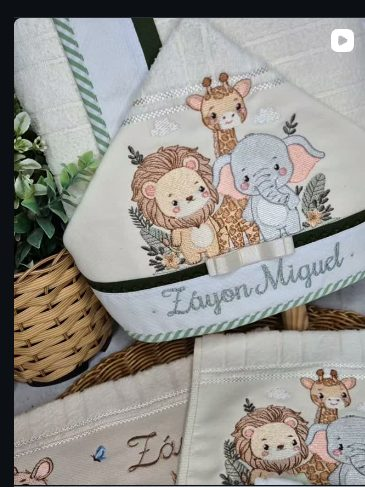
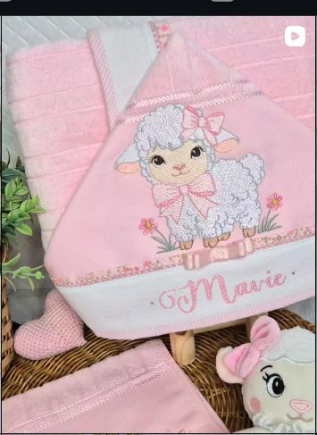
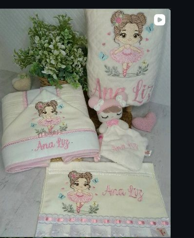
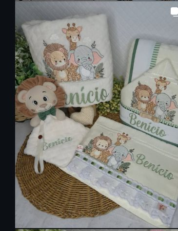
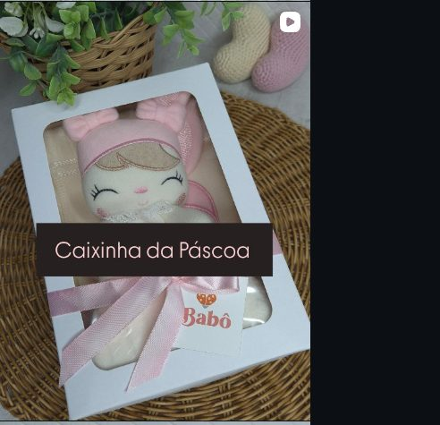

De Barra Mansa (RJ) para todo o Brasil 🇧🇷
Bordados que entregam
carinho, afeto e amor
A Babô Babador faz peças que encantam a Mamãe e o Bebê. Veja o catálogo e peça pelo WhatsApp.
Catálogo
Uma Peça para cada fase
Toque em qualquer peça para chamar direto no WhatsApp e combinar tecido, cor e entrega.
Toalha de Banho Tradicional
Toalha de Banho com Capuz
Cobertor
Naninha
Sobre a Babô Babador
Bordado à mão por Elisângela Valim
Cada babador, toalha e naninha da Babô Babador é bordado à mão, com o nome do bebê, em Barra Mansa (RJ) — e enviado para todo o Brasil. [Edite este parágrafo para contar desde quando a Babô borda, e o que faz cada peça ser especial: tecido, ponto, prazo de bordado etc.]
[Segundo parágrafo opcional: valores da marca, cuidado com cada encomenda, materiais escolhidos.]
- Bordado personalizado com o nome do bebê
- Toalhas com capuz, naninhas, babadores e kits escolares
- De Barra Mansa (RJ) para todo o Brasil
Como comprar
Do zap à porta de casa
-
01
Escolha o babador
Navegue pelo catálogo acima e veja qual estampa e tamanho combinam com seu bebê.
-
02
Chame no WhatsApp
Toque em "Peça pelo WhatsApp" — a mensagem já vem pronta com o nome do produto.
-
03
Combine e receba
Confirmamos cor, forma de pagamento e combinamos entrega ou retirada com você.
Bastidores
Acompanhe no Instagram
Fotos novas, tecidos chegando e babadores em produção: tudo primeiro no @babobabador.






Fotos do feed real de @babobabador — troque por posts mais recentes quando quiser (veja o README).